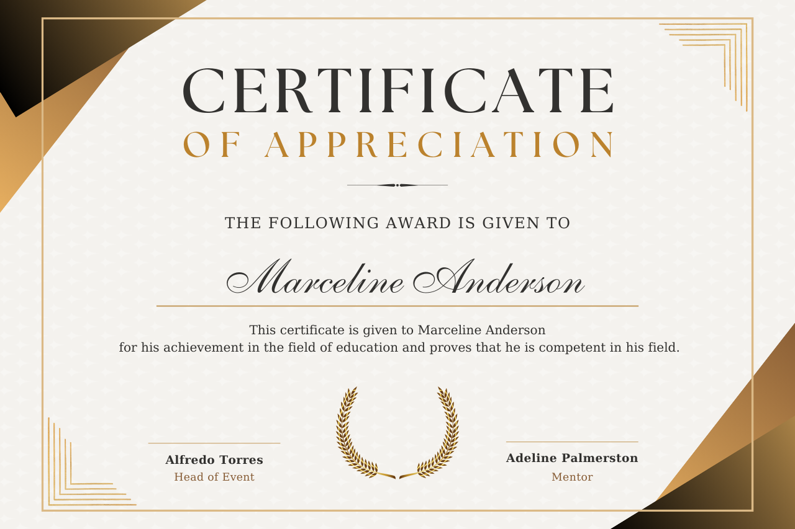
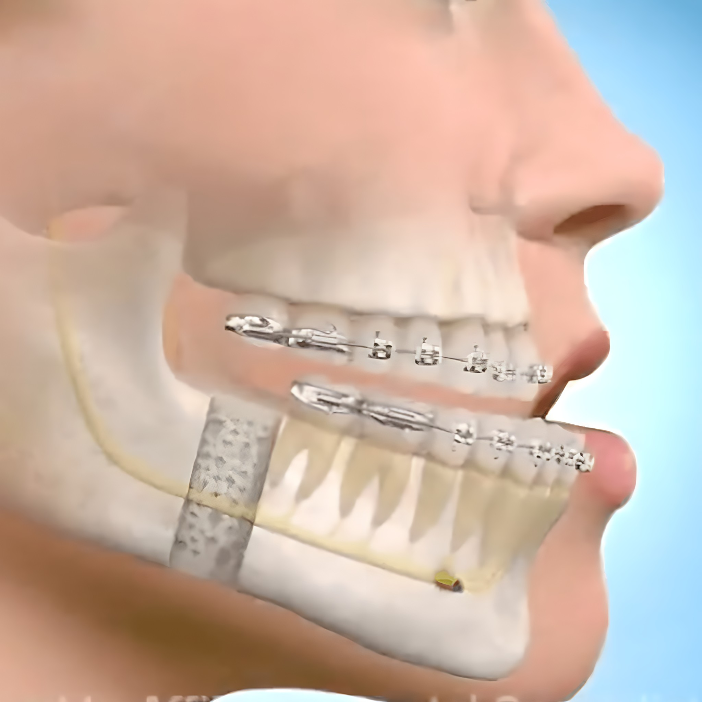

Ulm, Alemanha 2013
Bolsista AO 🇩🇪
Association for the study of internal fixation
Dr. Francesco é especialista em cirurgia ortognática com dupla formação acadêmica em medicina e odontologia, sendo uma das maiores referências em campinas e região.
Nossa clínica foi projetada para oferecer uma experiência confortável e segura, unindo modernidade e aconchego em cada detalhe. Desde a recepção, com um ambiente tranquilo e acolhedor, até os consultórios equipados com tecnologia de ponta, tudo foi pensado para proporcionar um atendimento humanizado e eficiente.
A cirurgia ortognática é um procedimento realizado por um cirurgião bucomaxilofacial para corrigir desalinhamentos dos ossos da face e da mandíbula. Indicada para pacientes com mordida irregular, problemas na fala, respiração ou mastigação, essa cirurgia melhora não apenas a função, mas também a estética facial.
Com planejamento detalhado e técnicas avançadas, a cirurgia ortognática proporciona um sorriso mais harmônico, maior conforto ao mastigar e respirar, além de um impacto positivo na qualidade de vida do paciente.
Um texto aqui sobre a área de atuação da cirurgia.
Ulm, Alemanha 2013
Association for the study of internal fixation
Amiens, França 2022
International bone research association
Maastricht, Holanda 2025
Strasbourg osteosynthese research group
Formações acadêmicas
Dr. Francesco é um profissional com dupla formação em odontologia e medicina
Graduação em Odontologia na UNICAMP
Graduação em Medicina na USCS
Residência em Cirurgia Bucomaxilofacial na UNESP Araraquara
Estágio em Cirurgia Bucomaxilofacial na University of Florida. Gainesville, EUA 🇺🇸
Mestrado em Implantologia Oral
Doutorando em Cirurgia, pela FCM-UNICAMP